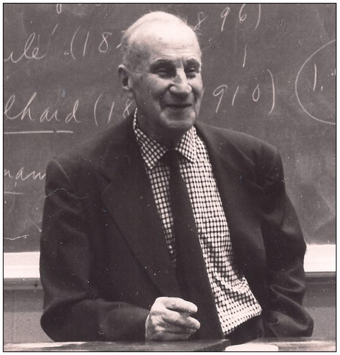
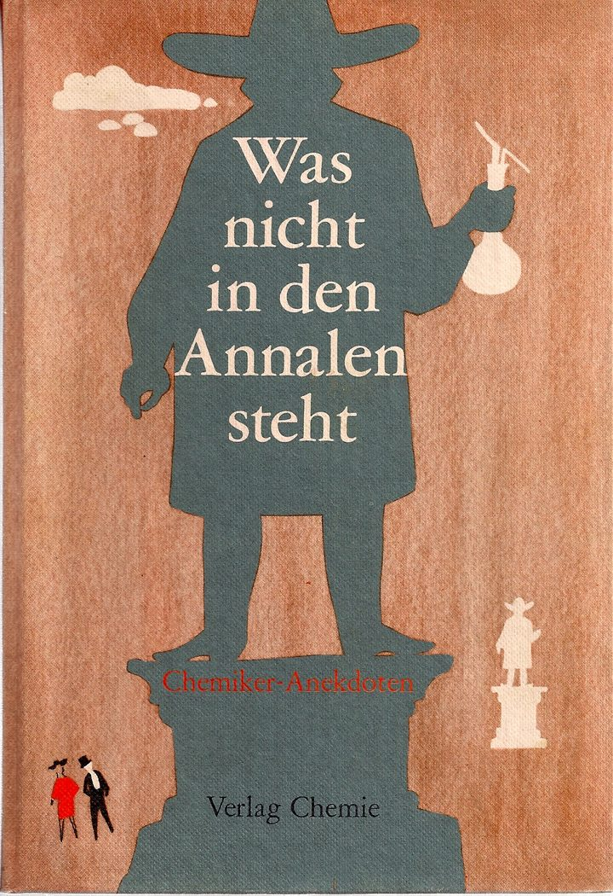

图坐在栏里
小论文的双栏怎么排
奕枢
排版笔记 · 范本 Jensen, Robert Bunsen’s Sweet Tooth
先看见这一页。纸是 Letter，612 点乘 792 点。左右大约空出 72 点，也就是一寸。中间切成两栏，每栏 225 点，栏缝 21 点。正文用 Times 一系 10 点，行距 12 点。节标题和正文同一个字号，只加粗。图不跨两栏。图题写成「图 1.」再加一句完整的话。
屏幕上往下滚的长读是另一间房：一栏大约七十个字符，图可以比栏宽。你要印出来的文章、课堂作业、会场小论文，用这一页。两栏把一行截短，眼睛不用横扫整张纸。

不要做成两篇并排的短文。字先把左栏填满，满了才去右栏。标本笔记里「左一段、右一张图」是并置，用来拆发明。论文是一条河，切成两道往下流。
栏怎么切
左右等宽。缝大约 21 点，不要更宽，也不要贴死。段首空两字。段与段之间空一行。第一段开头两个字母，范本里只放大到 14 点，不是掉下来的巨大首字。中文放大第一个字即可。

1